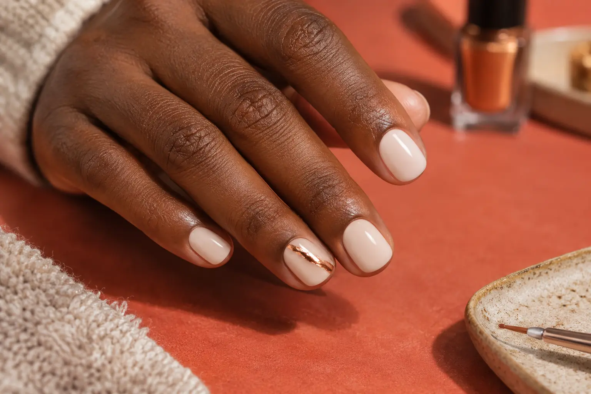

Nagų dizaino kaina: akcentų skaičius, technika ir nuėmimas
Autorius: Madbeauty redakcija · Numatyta 2026 m. lapkričio 27 d. 16:00 (Lietuvos laiku)
Kaip palyginti nagų dizaino kainą: pažymėkite dekoruojamus nagus, aprašykite norimą darbą ir atskirkite seno lako nuėmimą nuo naujo dizaino.

Nagų dizaino kainą palyginsite tik sulyginę darbų apimtį: kuriuos nagus puošti, kokio rezultato norite, kokia danga jau yra ir ar ją reikės nuimti. Vien pavadinimo „dizainas“ neužtenka tiksliai užduočiai apibūdinti. Platesnį pasirinkimo kontekstą rasite nagų dizaino gide.
2026 m. spalio 9 d. peržiūrėtame Vili Nails meniu aparatinio manikiūro su geliniu lakavimu, be seno lako nuėmimo, vienspalvis, prancūziškas arba ombré variantas nurodytas kaip 70 min. ir 43 Eur. „Maxi dailė“ – 80 min. ir 46 Eur. Tai konkretaus meniu variantai: 3 Eur ir 10 min. skirtumas nėra universali vieno akcento kaina, nes meniu tokio tarifo nepateikia. Su seno lako nuėmimu atitinkami variantai nurodyti kaip 80 min. ir 45 Eur, o „maxi dailė“ – 90 min. ir 50 Eur. Tai vieno teikėjo pavyzdys, ne rinkos vidurkis ar visiems teikėjams galiojanti technikos apibrėžtis.
Pažymėkite, kurie nagai bus dekoruojami
Užpildykite šį 10 nagų užrašų ruošinį: prie kiekvieno nago įrašykite norimą akcentą arba „be akcento“. Jis padeda perduoti darbo apimtį, bet nėra interaktyvi forma.
- Kairė ranka — nykštys: ______
- Kairė ranka — smilius: ______
- Kairė ranka — didysis: ______
- Kairė ranka — bevardis: ______
- Kairė ranka — mažylis: ______
- Dešinė ranka — nykštys: ______
- Dešinė ranka — smilius: ______
- Dešinė ranka — didysis: ______
- Dešinė ranka — bevardis: ______
- Dešinė ranka — mažylis: ______
Sulyginkite tą pačią paslaugos apimtį
Palyginimui užrašykite ne vien dizaino pavadinimą, bet ir pagrindinę paslaugą, dangą bei jos nuėmimą. Tada sutikrinkite, ar pasiūlymai apima tuos pačius nagus ir panašų norimą rezultatą. Jei viename meniu nurodytas tik dizaino variantas, o kitame – ir manikiūras, lakavimas ar nuėmimas, vien matomų kainų lyginti negalima.
- Pagrindinė paslauga: manikiūras, lakavimas ar abu?
- Esama danga: ar ją reikės nuimti ir ar nuėmimas įtrauktas?
- Dizainas: kurie nagai puošiami ir kokio rezultato norite?
- Nurodyta kaina ir trukmė: kuriam konkrečiam variantui jos taikomos?
Piešimas ant nagų ir nagų dekoravimas
„Piešimas ant nagų“ gali padėti nusakyti norimą piešinį, o „nagų dekoravimas“ — įvardyti pageidaujamą akcentą. Tačiau šie pavadinimai savaime nepasako, kiek nagų bus puošiama, kokia technika ar medžiaga naudojama, ar pagrindinė paslauga įskaičiuota. Tai nėra universalios technikos apibrėžtys: skirtingų teikėjų meniu pavadinimai ir darbų apimtis gali skirtis. Savo užduotyje nurodykite vietą, matomą detalę ir ar parodyta nuotrauka yra tiksli užduotis, ar tik įkvėpimas.
Palyginimo pavyzdys
Tarkime, norite skirtingo akcento ant abiejų bevardžių pirštų, o ant kitų nagų — vienspalvio pagrindo. Jei šiuo metu yra gelinė danga, į palyginamą užklausą įrašykite ir tai, kad reikalingas jos nuėmimas. Sulyginkite tik pasiūlymus, kuriuose aiškiai nurodyti tie patys darbai; pavyzdys nepatvirtina konkrečios kainos už šią užduotį.
Palyginkite procedūrų aprašus kataloge: Dizainas. Konkrečią darbų apimtį, kainą ir prieinamumą tikrinkite prie realaus teikėjo pasiūlymo.
Planuojamos vidinės nuorodos
Šaltiniai peržiūrai
- Vili Nails · realių paslaugų variantai — 2026-10-09 Vili Nails: aparatinis manikiūras su geliniu lakavimu be nuėmimo: vienspalvis, prancūziškas ar ombre – 70 min., 43 Eur; maxi dailė – 80 min., 46 Eur. Su nuėmimu atitinkamai 80 min., 45 Eur ir 90 min., 50 Eur. Konkretaus meniu variantai, ne vieno akcento tarifas ar Lietuvos vidurkis.